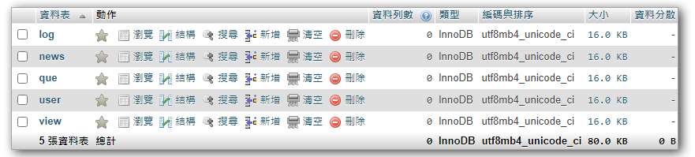

每個題組依狀況不同，在這一步有不同的做法，視自己對題目的熟悉程度來做應變，可以一次把全部資料表建完，也可以視解題的進度來逐步建立或修改資料表。

根據題意，題組二會需要用到以下的資料表：
- user - 會員資料表(含管理者帳號)
- view - 訪客統計資料表
- news - 文章資料表
- que - 問卷資料表
- log - 按讚紀錄表
- 依序建立功能需要的五張資料表:
user 使用者資料表
name type pk default A_I note id int(10) yes yes 流 水 號 acc text 帳 號 pw text 密 碼 email text 電子郵件 view 每日訪客統計資料表
name type pk default A_I note id int(10) yes yes 流 水 號 date date 日 期 total int(10) 訪客人數 news 文章消息資料表
name type pk default A_I note id int(10) yes yes 流水號 title text 標 題 text text 內 容 type int(5) 分 類 good int(5) 0 按讚數 sh int(1) 1 顯 示 que 問卷資料表
name type pk default A_I note id int(10) yes yes 流 水 號 text text 文字內容 parent int(5) 題目 id count int(5) 0 統 計 log 按讚紀錄資料表
name type pk default A_I note id int(10) yes yes 流水號 news int(5) 文章id user text 會員帳號
為了解題順利，可以把資料表中的一些欄位設為可接受空值的狀況，這樣即使未設定內容，也能正常新增或更改資料，不過這個做法只是為了先求解題完成而做的取巧，實務上應該根據需求及功能來決定欄位是否可以接受空值，並在程式端檢查來源資料是否為空值
建完資料表後，就可以把
base.php也準備好，並做一下簡單的測試，確認資料表的連線和存取都是沒問題的。